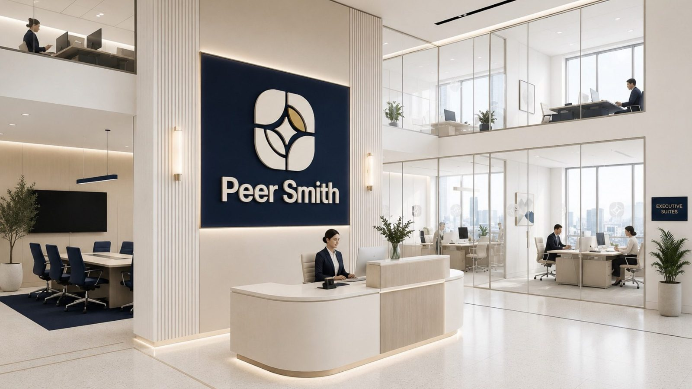
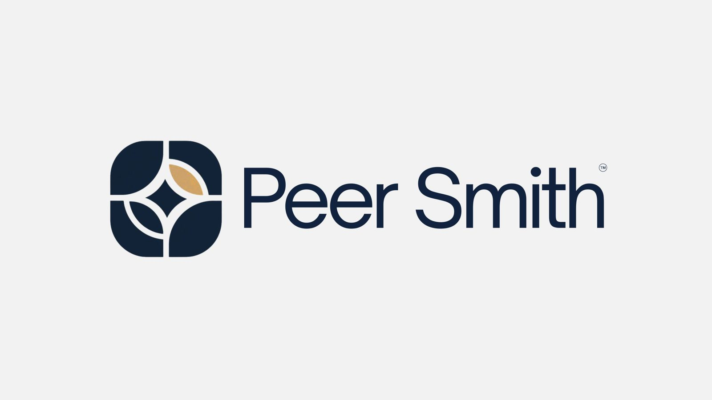
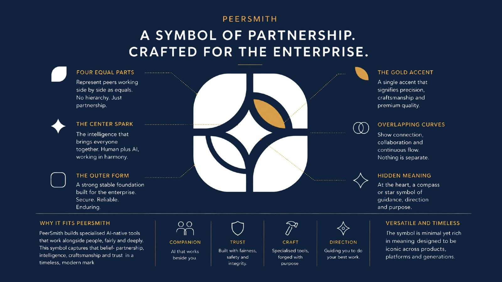
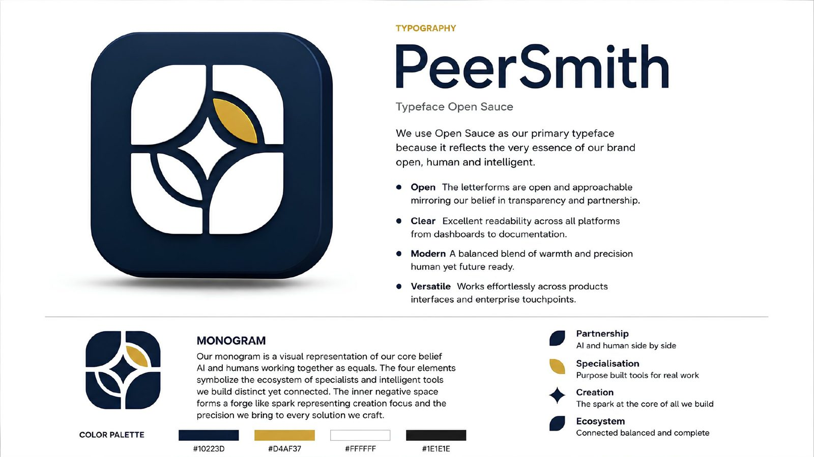
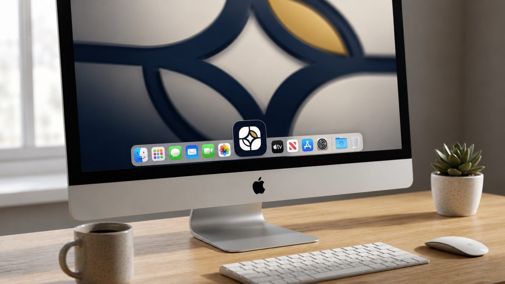
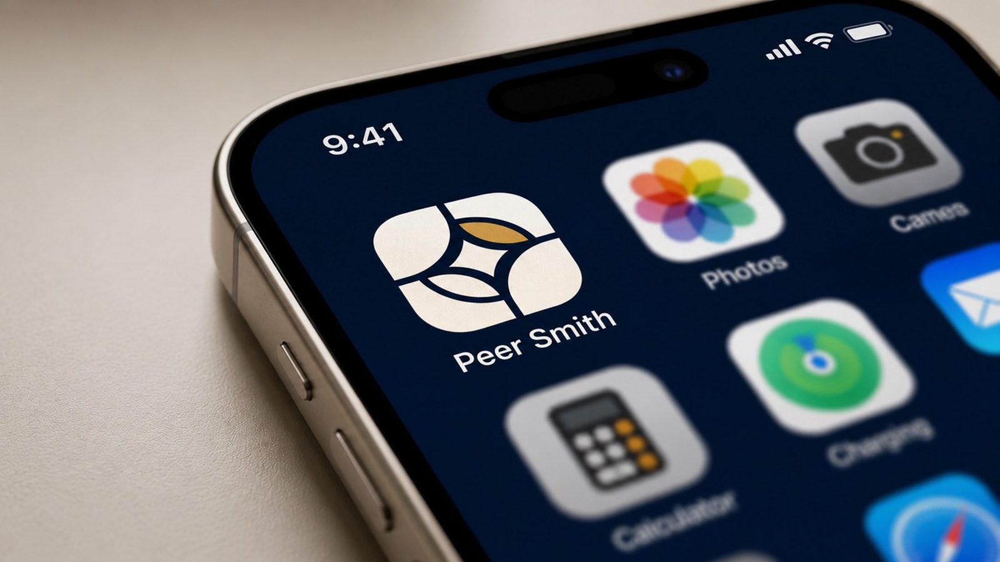
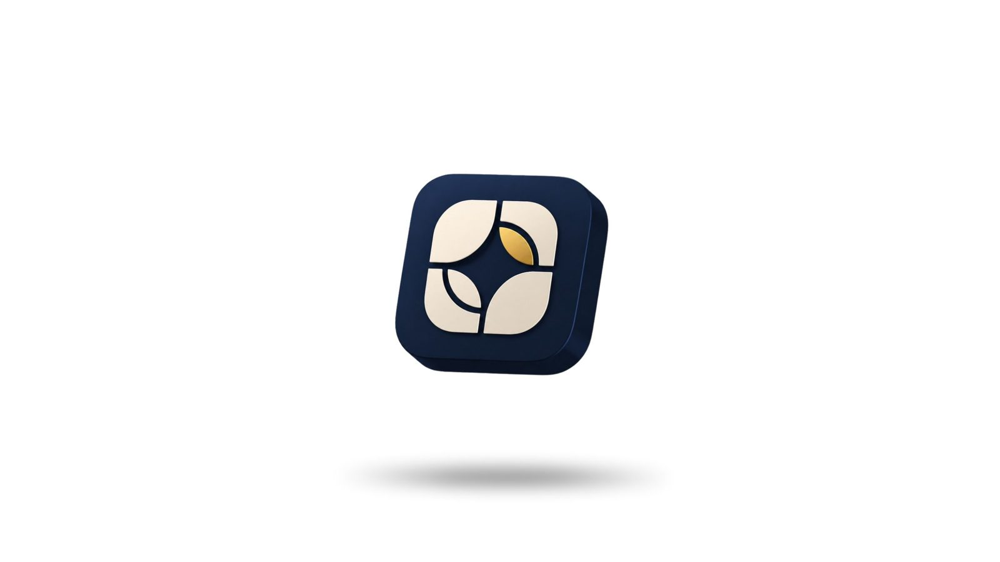
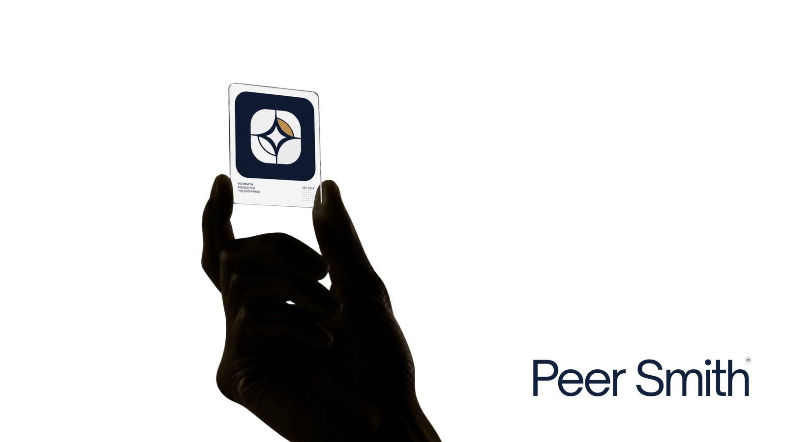

Peer Smith
A symbol of partnership, crafted for the enterprise.

The brief
Peer Smith builds specialised, AI-native tools that work alongside people rather than replacing them. They needed a mark that would earn enterprise trust on day one, yet still feel human, warm and collaborative.
Our answer was a monogram built from four equal parts around a single spark: a quiet, confident symbol of people and intelligent tools working together as equals.
The logo

Every part means something
Four equal parts
Peers working side by side as equals. No hierarchy, just partnership.
The centre spark
The shared intelligence that forms when people and tools work in harmony.
The gold accent
A single touch of gold for precision, craftsmanship and premium quality.
A hidden compass
At its heart, a star that points the way: guidance, direction and purpose.

Colour & type
Open, clear, modern and versatile: letterforms that mirror the brand's belief in transparency and partnership, readable from dashboards to documentation.

In the world



